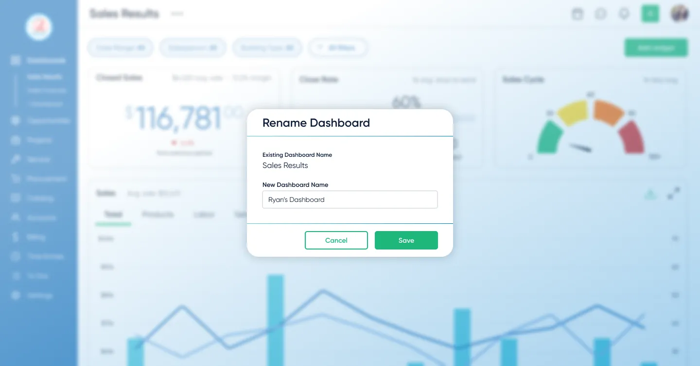

Users were ignoring our default dashboards because the experience did not match how they monitored their work. I redesigned the product around customizable, role-based dashboards with AI-supported summaries, increasing engagement by 71%.
Across early user research, stakeholder conversations, and prototype testing, the pattern was consistent: users needed configurable dashboards anchored in familiar metrics before they trusted AI-generated summaries.
The goal wasn't just to add metric cards to the existing dashboards or to introduce another dashboard. Rather, we made them customizable, permissions-based, and highly editable. Users could create and save multiple dashboards, each tailored to their specific business needs. We also added AI-powered summarized reporting capabilities, which became a highlight in sales demos.
I focused the release around role-based templates that helped users start quickly without locking them into rigid layouts. Users could start from a template, build from a blank dashboard, add widgets, rearrange sections, and choose visualization styles.
The goal was to make dashboards flexible enough to replace spreadsheet exports without forcing every team into the same view.
Limited AI to verifiable metrics after research showed users trusted dashboards more than opaque outputs. The AI was not allowed to invent conclusions; it could only summarize the visible data on the dashboard so users could trace the AI's logic back to a specific chart.
Leadership believed users might eventually bypass traditional dashboards and ask AI direct business questions instead. It was a reasonable hypothesis, but research pointed to a different behavior: users struggled to ask useful questions before they had seen their own data.
My argument was that business owners needed familiar KPIs as anchors. Without visible metrics, trends, and exceptions in front of them, they had no reliable starting point for exploration.
Interviews supported that direction, so I pushed the team toward a hybrid model: dashboards would establish awareness and trust, while AI would explain and summarize the data users could already verify.
I prototyped the end-to-end flow in Figma and tested it with 5 target users — from choosing a template to customizing widgets and generating an AI summary.
Early concepts kept dashboards minimal. Research showed teams wanted a large set of KPI cards for the metrics they already knew we tracked—and they wanted to rearrange and edit them to match how they run their day. I expanded the design to support dense KPI cards with fast drag‑and‑drop editing and rearranging. That increased scope and timeline, but it removed the core adoption blocker: visibility and control.
These sessions validated the core flow and allowed us to defer advanced metrics and broader AI safely.
Dashboards shifted from being ignored to becoming the primary way teams monitored their work.
They also improved demo effectiveness, giving sales teams immediate, high-impact views tailored to different audiences.
Users reached an average interaction depth of 2 customizations per chart, showing they weren’t just viewing dashboards. They were actively tailoring charts to fit specific operational questions and workflows.

The project reinforced that research is what makes pushback credible. The AI-first hypothesis was reasonable, but interviews showed users needed familiar KPIs before they could ask useful questions. That evidence shifted the team toward a hybrid model: dashboards for trust, AI for explanation.
The team planned to expand AI summarization to other parts of the platform, building on the trust the dashboard work had established. I left D-Tools before that shipped, but the pattern of dashboards first, AI layered on top became the template for how they approached AI features going forward.